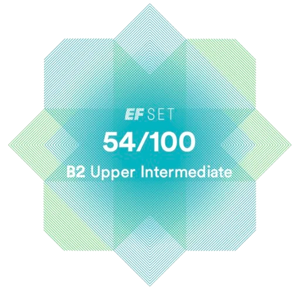
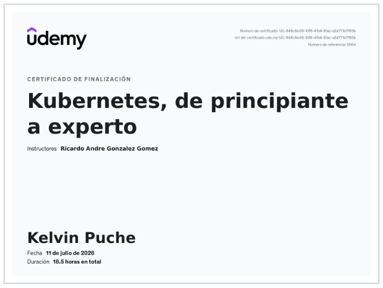
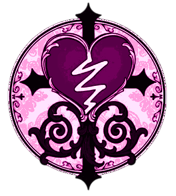
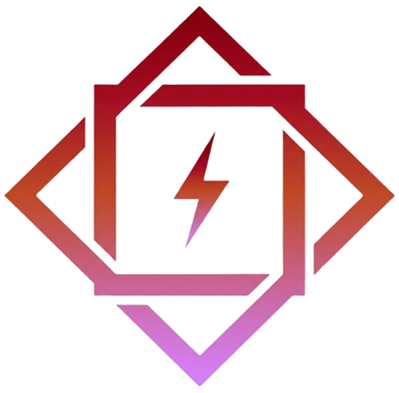
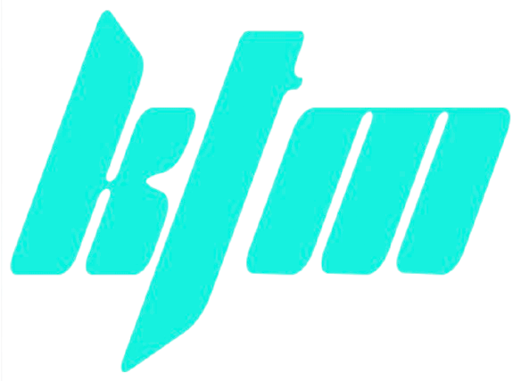

VOL. 01 · 2026 · DEV PORTFOLIO
KELVIN PUCHE · WEB DEV
web developer
↓
VOL. 01 · 2026 · DEV PORTFOLIO
KELVIN PUCHE · WEB DEV
web developer
Mi crecimiento academico:
[Click card: para abrir el enlace con el acceso público a mi certificado]
Academia EDTeam: Java
Certificado en Java desde Cero en la academia EDTeam
Mi primer lenguaje de programación. Muy completo y útil para todo tipo de tareas.
CISCO:Python Essentials I
Opino que es un lenguaje muy completo y estoy orgulloso de haberlo aprendido.
CISCO:Python Essentials II
Opino que es un lenguaje muy completo y estoy orgulloso de haberlo aprendido.
Oracle Cloud Infrastructure: AI Foundations Associate
Gracias a Oracle, ahora poseo un profundo conocimiento teórico de los fundamentos de la IA moderna (ML, DL, LLMs) y experiencia práctica con las herramientas de IA de Oracle Cloud Infrastructure (OCI).
CISCO: Data Analytics
Certificado en Data Analytics, con herramientas como SQL, Excel y Tableau.
EF SET: Inglés B2

Certificación de inglés nivel B2 (Upper Intermediate) verificada por EF SET.
Udemy: Kubernetes

Certificación de Kubernetes en Udemy. Orquestación de contenedores, deployments, services, ingress y más.
También quisiera destacar y agradecer los cursos de Pildorasinformaticas, SergieCode, MitoCode, Fazt, Jey Code y entre otros por ofrecer sus servicios y brindar aprendizaje de manera gratuita.
Puedes encontrar más en mi perfil de GitHub.
[Click card: para abrir el repositorio Github con el código fuente]

Vitre
Red Social al estilo Reddit con chat, notificaciones, perfiles, publicaciones, comentarios y más.
Proyecto de red social al estilo Reddit, tornando más a mi estilo.

AugesCode
Mi POS administrativo en la nube (AugesCloud), Página de presentación de la marca (personal) y co-desarrollador de AugeSGIntern (Programa Local).
Sistemas POS administrativos.

KTM Task Manager
Gestor de tareas full-stack con diseño Neo-Tokyo. Autenticación JWT, CRUD completo, tema oscuro/claro, atajos de teclado y soporte PWA.
Primer proyecto combinando Spring Boot y React.
Text Editor
Aplicación de escritorio creada en Java con la biblioteca JSwing.
Un editor de texto en el que estuve jugando un poco con la biblioteca JSwing.
El Ahorcado
Un minijuego divertido en consola :).
Muy divertido, me moria de risa mientras lo jugaba.
Tecnologías que manejo

.svg.png)